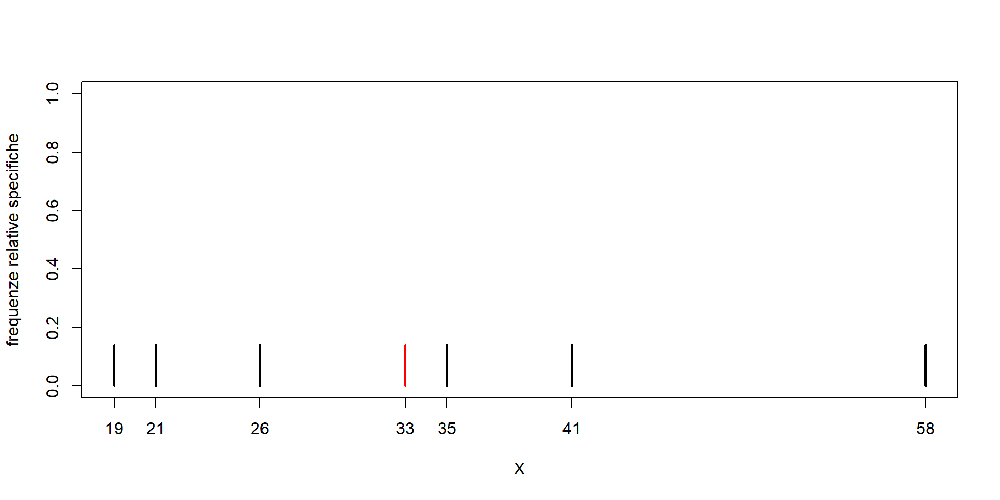

6 Esercitazione 6
6.1 Esercizio 1
La seguente tabella riporta le serie storiche mensili dei valori (in migliaia di Euro) dei contratti stipulati dalle due filiali di Milano (\(X\)) e Torino (\(Y\)) di un’azienda nel corso dell’ultimo semestre del 2017:
| Mese | \(X\) | \(Y\) |
|---|---|---|
| Luglio | 203 | 231 |
| Agosto | 158 | 143 |
| Settembre | 87 | 134 |
| Ottobre | 114 | 123 |
| Novembre | 225 | 214 |
| Dicembre | 253 | 249 |
| Totale | 1040 | 1094 |
- Si calcolino le medie aritmetiche di \(X\) e \(Y\).
- Si calcolino i tassi di variazione medi mensili di \(X\) e \(Y\) per l’intero periodo.
- Quali conclusioni si possono dedurre dai risultati ottenuti nei due punti precedenti?
6.2 Esercizio 2
I redditi annui (in migliaia di Euro) di 7 individui sono dati da \[26,\,\,21,\,\,58,\,\,33,\,\,35,\,\,19,\,\,41.\] Si stabilisca se la distribuzione dei redditi è simmetrica rispetto alla mediana. In caso contrario si calcoli l’indice di verso di asimmetria.
6.3 Esercizio 3
La seguente tabella riporta gli esiti di un esame \(X\) di 484 studenti suddivisi in base al corso di studi \(Y\).
|
\(Y\)
|
||||
|---|---|---|---|---|
| \(X\) | C1 | C2 | C3 | Totale |
| Insufficiente | 39 | 42 | 24 | 105 |
| Sufficiente | 45 | 65 | 76 | 186 |
| Buono | 53 | 44 | 39 | 136 |
| Ottimo | 23 | 18 | 16 | 57 |
| Totale | 160 | 169 | 155 | 484 |
- Si determini la mediana di \(X\).
- Si determini la moda di \(Y\) e se ne valuti la rappresentatività.
- Si calcolino le distribuzioni di frequenze relative parziali e la distribuzione di frequenze relative marginali del carattere \(X\).
- Si stabilisca, giustificando la risposta, se fra i due caratteri considerati esiste indipendenza distributiva. In caso di risposta negativa, si costruisca la tabella delle frequenze congiunte in modo che i due caratteri risultino indipendenti.
- Si fornisca un indice che misuri il grado di dipendenza tra \(X\) e \(Y\).
Si consideri ora il carattere \(Z=\)“voto conseguito all’esame”, esso può essere organizzato in classi in base alle modalità del carattere \(X\).
\[\begin{equation*}Z=\begin{cases}[0,17]\quad\,\,\, \mathrm{per\ } X=\mathrm{``Insufficiente"}\\ [18,21]\quad \mathrm{per\ } X=\mathrm{``Sufficiente"}\\ [22,26]\quad \mathrm{per\ } X=\mathrm{``Buono"}\\ [27,30]\quad\mathrm{per\ } X=\mathrm{``Ottimo"}\end{cases}\end{equation*}\]
- Si valuti il grado di dipendenza in media di \(Z\) da \(Y\) commentando il risultato ottenuto.
Soluzioni
Esercizio 1
- \[\overline{x}=\frac{1040}{6}=173.3333\,\,\mathrm{mila\ Euro\ al\ mese}\] \[\overline{y}=\frac{1094}{6}=182.3333\,\,\mathrm{mila\ Euro\ al\ mese}\]
- \[\overline{V}_X=\sqrt[5]{\frac{253}{203}}-1=0.0450\] \[\overline{V}_Y=\sqrt[5]{\frac{249}{231}}-1=0.0151\]
-
Mediamente, ogni mese la filiale di Torino a prodotto contratti per un valore superiore rispetto alla filiale di Milano.
Mediamente il valore dei contratti prodotti dalla filiale di Milano è cresciuto del 4.5% al mese, mentre per quelli prodotti dalla filiale di Torino il valore è cresciuto mediante dell’1.51% al mese.
Esercizio 2
Valori ordinati: \[19,\,\, 21,\,\, 26,\,\, \mathbf{\underline{33}},\,\, 35,\,\, 41,\,\, 58\] La mediana è pari a 33. Ora si immagini che i dati siano una distribuzione di frequenze con frequenze unitarie e facciamo la rappresentazione grafica.
rm(list = ls())
val <- c(26,21,58,33,35,19,41)
val <- sort(val)
n <- length(val)
plot(val, rep(1/n,n), xlab='X', ylab='frequenze relative specifiche',
ylim = c(0,1), type = 'h', axes = F, lwd=2)
segments(median(val),0,median(val),1/n, col = 'red', lwd = 2)
box()
axis(1, at = val, labels = val)
axis(2, at = seq(0,1,0.2)) Affinché la distribuzione sia simmetrica deve verificarsi che \(frs(Me+c)=frs(Me-c),\,\forall c>0.\) Assumendo \(c=2\), \(frs(Me+c)=frs(35)=0.142\neq frs(Me-c)=frs(31)=0\). Quindi la distribuzione non è simmetrica rispetto la mediana.
Inoltre, si nota che le osservazioni a destra della mediana si allontanano di più di quelle alla sua sinistra, pertanto ci possiamo aspettare asimmetria positiva (media maggiore della mediana).
Per verificare ciò calcoliamo l’indice di verso di asimmetria: \[a_1=(M_1-Me)=(33.2857-33)=0.2857\]
Esercizio 3
|
\(Y\)
|
||||
|---|---|---|---|---|
| \(X\) | C1 | C2 | C3 | Totale |
| Insufficiente | 39 | 42 | 24 | 105 |
| Sufficiente | 45 | 65 | 76 | 186 |
| Buono | 53 | 44 | 39 | 136 |
| Ottimo | 23 | 18 | 16 | 57 |
| Totale | 160 | 169 | 155 | 484 |
-
La posizione della mediana è \(\frac{N+1}{2}=242.2\). Le frequenze cumulate del carattere \(X\) sono:
Pertanto, la mediana corrisponde alla modalità “Sufficiente”.\(X\) \(C_i\) Insufficiente 105 Sufficiente 291 Buono 427 Ottimo 484 - La moda del carattere Y corrisponde alla modalità con frequenza più elevata, essa è C2 con 169 studenti. Essa rappresenta il 34.92% della popolazione.
-
\(Y\)
\(X\) C1 C2 C3 Totale Insufficiente 0.2438 0.2485 0.1548 0.2169 Sufficiente 0.2812 0.3846 0.4903 0.3843 Buono 0.3312 0.2604 0.2516 0.281 Ottimo 0.1438 0.1065 0.1032 0.1178 Totale 1 1 1 1 -
Le distribuzioni parziali di \(X\) sono tutte diverse tra di loro e sono diverse dalla distribuzione marginale, pertanto \(X\) non è indipendente in distribuzione da \(Y\). Nel caso non si fossero già calcolate le distribuzioni parziali per rispondere a questa domanda è sufficiente calcolare una frequenza congiunta teorica nel caso di indipendenza distributiva \(\hat{n}_{ij}=\frac{n_{i.}n_{.j}}{N}\) e mostrare che questa è diversa da quelle effettive. Si noti che è sufficiente trovare un’eccezione per confermare che non c’è indipendenza distributiva.
\(Y\)
\(X\) C1 C2 C3 Totale Insufficiente 34.71 36.66 33.63 105 Sufficiente 61.49 64.95 59.57 186 Buono 44.96 47.49 43.55 136 Ottimo 18.84 19.9 18.25 57 Totale 160 169 155 484 -
\[M_2\left(|\rho|\right)=\left\{\frac{1}{N}\sum_{i=1}^r\sum_{j=1}^c|\rho_{ij}|^2\cdot\hat{n}_{ij}\right\}^{\frac{1}{2}}=\left\{\frac{1}{N}\sum_{i=1}^r\sum_{j=1}^c\left|\frac{C_{ij}}{\hat{n}_{ij}}\right|^2\cdot\hat{n}_{ij}\right\}^{\frac{1}{2}}=\left\{\frac{1}{N}\sum_{i=1}^r\sum_{j=1}^c\frac{C_{ij}^2}{\hat{n}_{ij}}\right\}^{\frac{1}{2}}\]
Contingenze assolute \(C_{ij}=n_{ij}-\hat{n}_{ij}\)
\[C_{ij}^2\]\(Y\)\(X\) C1 C2 C3 Totale Insufficiente 4.29 5.34 -9.63 0 Sufficiente -16.49 0.05 16.43 0 Buono 8.04 -3.49 -4.55 0 Ottimo 4.16 -1.9 -2.25 0 Totale 0 0 0 0 \(Y\)\(X\) C1 C2 C3 Insufficiente 18.4 28.52 92.74 Sufficiente 271.92 0 269.94 Buono 64.64 12.18 20.7 Ottimo 17.31 3.61 5.06 \[\frac{C_{ij}^2}{\hat{n}_{ij}}\]
\[M_2(|\rho|)=\sqrt{\frac{16.5665}{484}}=0.1850\] mediamente le frequenze effettive si discostano da quelle teoriche di indipendenza distributiva del 18.5%.\(Y\)\(X\) C1 C2 C3 Insufficiente 0.5302 0.7778 2.7576 Sufficiente 4.4222 0 4.5316 Buono 1.4378 0.2565 0.4754 Ottimo 0.9186 0.1814 0.2774 -
È necessario sostituire le classi di \(Z\) con il loro valore centrale per poter calcolare le medie parziali.
\(Y\)
\(Z\) C1 C2 C3 Totale 8.5 39 42 24 105 19.5 45 65 76 186 24 53 44 39 136 28.5 23 18 16 57 Totale 160 169 155 484 Medie parziali \[\overline{z}_1=19.6; \quad \overline{z}_2=18.9;\quad \overline{z}_3=19.86\]
Media complessiva di Z \[\overline{z}=19.44\]
Varianze parziali di Z \[\sigma_1^2=47.96;\quad \sigma_2^2=43.47;\quad \sigma_3^2=31.99\]
Varianza complessiva di Z \[\sigma^2=41.4\]
Varianza fra le medie \[\begin{align*}V_F & =\frac{\displaystyle\sum_{j=1}^c(\overline{z}_j-\overline{z})^2 n_{.j}}{N}=\\ &=\frac{(19.6-19.44)^2\cdot 160+(18.9-19.44)^2\cdot 169+(19.86-19.44)^2\cdot 155}{484}=\\ &=\frac{80.7312}{484}=0.1668 \end{align*}\]
Varianza nei gruppi \[V_N=\frac{\displaystyle\sum_{j=1}^c\sigma_j^2 n_{.j}}{N}=\frac{47.96\cdot160+43.47\cdot169+31.99\cdot155}{484}=\frac{20037.6}{484}=41.4\]
Verifica \[V_T=\sigma_Z^2=\frac{198924}{484}=41.4\simeq V_F+V_N=\frac{20118.3312}{484}=41.5668\]
Le differenze sono dovute a errori di arrotondamento.
\[\eta_{Z│Y}^2=\frac{V_F}{V_T} =\frac{0.1638}{40.15}=0.004\] Il grado di dipendenza in media è pari allo 0.4% del suo massimo valore teorico. (consiglio: a meno che non venga chiesto di verificare la scomposizione della varianza, scegliere tra \(V_T\), \(V_N\) e \(V_F\) e scegliere le due che si preferisce e ricavare la terza dalle altre due).